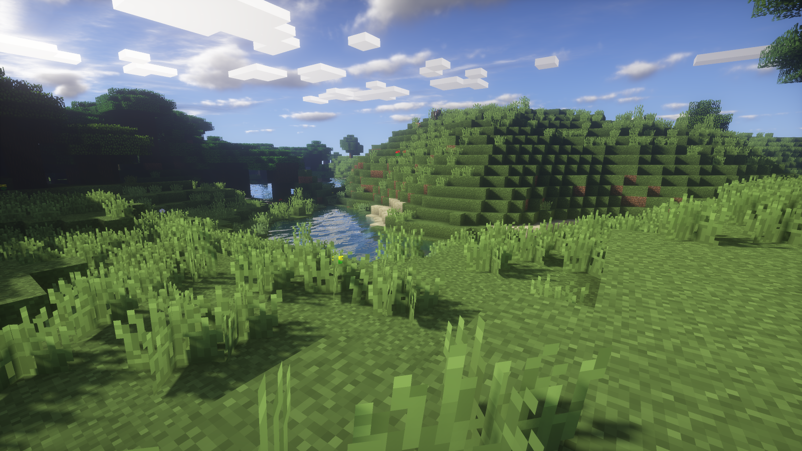
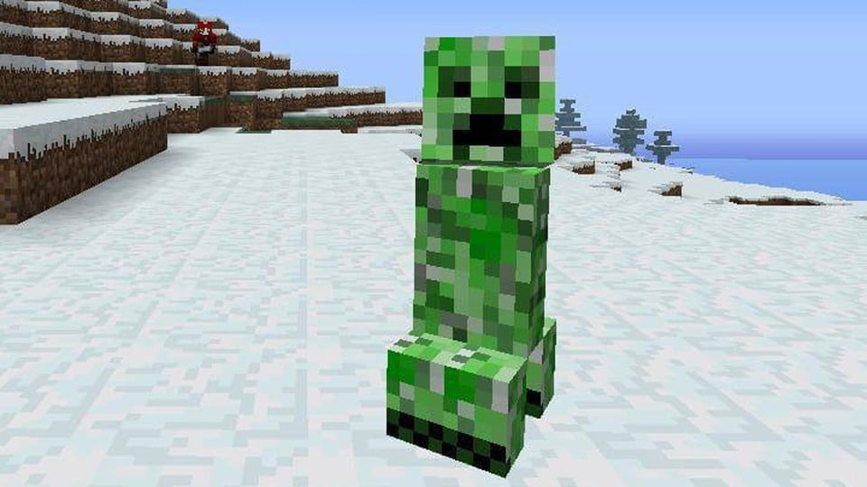

¿De qué trata?
En realidad, podriamos decir, de que NO trata Minecraft.
En los últimos meses todo el mundo habla de Minecraft como herramienta en educación. El lanzamiento de Minecraft: Education Edition ha hecho que muchos se interesen por el videojuego, que a partir de ahora tendrá su propia versión específicamente diseñada para el aula. Tras haber hablado de las posibilidades y los beneficios de usar Minecraft en clase, hay muchos que continúan teniendo una duda capital: Realmente, ¿qué es Minecraft? ¿Cómo es posible que un videojuego pueda tener cabida en el aula y en la educación? Para los que no sepan de qué trata o para los que nunca lo hayan visto en acción, hoy vamos a desmigar los detalles de Minecraft, que por si fuera poco es considerado por muchos uno de los títulos más exitosos de la historia de los videojuegos. Al inicio del juego, el jugador se encuentra en un mundo generado mediante un algoritmo, lo que permite que este sea teóricamente infinito y nunca se generen dos mundos iguales. El jugador es libre de desplazarse por el terreno, conformado por distintos biomas, entre los que se encuentran desiertos, sabanas, selvas, océanos, llanuras, tundras, etcétera. El juego posee su propio ciclo de tiempo de día y noche, siendo que un día en el juego equivale a 20 minutos en la realidad
Pequeña introducción al juego
Minecraft, el juego conocido por pasar de 0 al infinito en unas semanas. minecraft es un juego del genero “sandbox” o caja de arena, caracterizado por darte la oportunidad de crear lo que desees en él, la única limitación es tu imaginación. Este juego consta de dos modalidades principales, el modo creativo o pacifico y el modo supervivencia. en el primer modo, esto es pacífico, podremos disponer de todo el mundo sin preocuparnos de nada además de lo que deseemos crear y, obvio, de las grandes caídas, este modo es el utilizado generalmente por los “artistas” de minecraft para asegurar que ninguna casualidad del destino (creeper de ahora en adelante) arruine sus creaciones, tu peor enemigo va a ser el tiempo, porque cuando empieces vas a tener que apurarte en crear una casita antes de que caiga la noche, porque cuando las sombras devoren al mundo, el mal va a liberado en él, durante la noche criaturas que generalmente están bajo tierra o en cavernas salen a la superficie y si te ven, no vas a durar mucho asi que corré; dentro de las criaturas más comunes podemos encontrar a los zombie, creeper, esqueletos, arañas, entre otros. sin embargo al llegar el día tanto los zombies como los esqueletos morirán bajo la luz del sol, mientras que las arañas y los creeper van a seguir vagando por ahí. como dato adicional cabe mencionar que estos atacan de distintas maneras; los zombie y arañas te golpearan cuerpo a cuerpo, los esqueletos te van a tirar flechazos, mientras que los creeper utilizan un ataque suicida, si se encuentran muy cerca de vos van a explotar dejando un gran caos a su alrededor y causándote grandes daños tanto a vos como a tus construcciones, asi que si ves uno y estas cerca de tu casita corré (cobarde) o matalo (gamer normal), no hay otra opción, en realidad si, podés perderlo en el camino pero asi es aburrido. De ahí que estas criaturas en particular sean tan odiadas y temidas, el hecho de escuchar un ssssssssssssssssss (sonido característico de esta criatura) es sinónimo (o no) de tu fin. Igual el minecraft parece un juego friendly pero aveces salen sonidos raros de la nada y te llevas el peor susto de la vida, no tan asi, pero similar. Volviendo al tema anterior... No siempre vas a tener que huir, ya que a medida que jugas podrás adentrarte en las profundidades de la tierra para recolectar minerales y así crear cosas, dentro de las cuales se encuentran las tan necesarias armas, dependiendo de qué materias estén hechas, mas fuertes van a ser y ahi vas a poder acabar con mas enemigos, en definitiva minecraft ofrece todo lo que un buen juego debe tener, podés construir colosales obras arquitectónicas, complicados sistemas, podés luchar contra criaturas malignas, etc.
Dato de color, el Creeper fue resultado de un error de programación ocurrido durante la etapa Alpha del desarrollo de Minecraft. El creador de Minecraft, Markus Persson o mejor conocido como Notch, creó al Creeper basándose en la extraña apariencia del modelo de cerdo.
Igual en la foto que puse sale mas feo de lo que es :(
Si nunca lo jugaste, Acá te dejamos una pequeña guía de lo que tenés que tener en cuenta. Si querés descargarlo¡acá está el sitio oficial! Aunque, es un juego que es pago, hay links que pueden solucionar eso *guiño guiño* Launcher gratuito acá
Y finalmente, por acá abajo te dejamos dos streamers importantes dentro del mundo minecraftiano(?)
streamers
Es un youtuber argentino que sube gameplays de Minecraft y contenido muy variado.
¡Seguilo en twitch!
Fue principalmente conocido por su trabajo en YouTube, donde predominantemente subía videos de Minecraft y transmitía en directo
¡Seguilo en YOUTUBE!


¿Qué es Argentum Online?
Argentum online es el primer Videojuego de rol multijugador masivo en línea o MMORPG (massively multiplayer online role-playing game) de la Argentina , es el el primer juego online que jugó el staff de Offline.
Es un juego Argentino de 2 Dimensiones, desarrollado por Márquez Pablo Ignacio, en el año 1999. Desde sus primeras versiones hasta hoy, ha tenido muchos avances, y logró un crecimiento increíble; no solo es jugado por Argentinos, sino que también es un juego muy jugado en España. La comunidad de Argentum Online hoy en día es bastante grande. Aunque hay una gran diversidad de servidor, es un juego prácticamente monopolizado por servidores famosos (Imperium Ao, Fenix Ao, Tierras del Sur y Hispano Ao entre otros.)

Sinceramente desde mi punto de vista es el mejor juego que vi en mi VIDA, no lo comparo con nada, arranqué jugando a los 3 años (hoy tengo 20) gracias a que mi hermano y mi hermana eran re viciosos, una vez lo conoces entras en un bucle que no tiene fin. Tiene una jugabilidad única que no la vi en ningún otro juego, posta, muchas cosas lo hacen único.
Tenemos amistades que conocimos en el juego y conservamos hasta el día de hoy, y a muchos jugadores les pasó eso, era una experiencia muy linda (a veces no porque te mataban por manquear y tus amigos te bardeaban) pero eso no le saca lo gracioso/lindo a la experiencia de jugarlo
Si querés empezarlo a jugar pero estás solo y te da cosita por eso no te preocupes, siempre vas a encontrar a alguien para jugar, la gente suele ser copada
Si nunca lo jugaste, Acá te dejamos una pequeña guía de cómo podés iniciar tu vida argemtuniana.
Si querés descargarloacá te dejamos un link a un grupo de facebook en el que postean clientes vigentes del ao, hay muchisimos, deberías experimentar cual es más de tu agrado, el equipo offline recomienda FSAO, FAO, HAO y Frost Ao, ya que son los que son más parecidos al juego base.
El Argentum es un juego gratuito, tiene unos graficos horribles, hasta super mario tiene mejores graficos para algunos, pero para offline, es el mejor juego de la galaxia.
¿Cansado de Scrollear?
¡Relajá jugando a la viborita!
-Solo pc:(-
¡Hace click acá!En realidad es mentira, no relaja, te estresa más ^-^